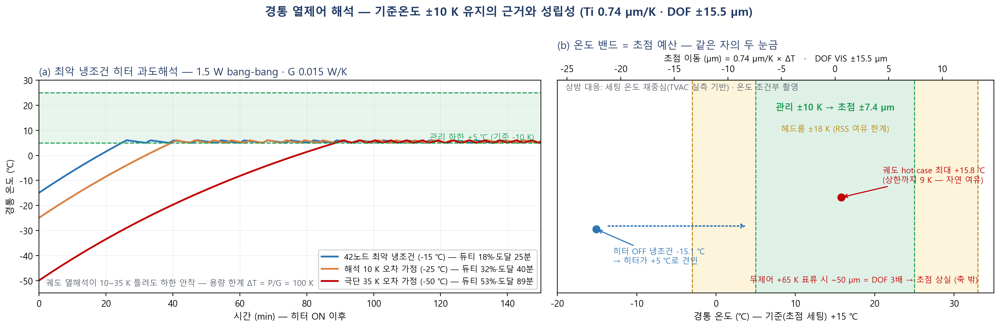
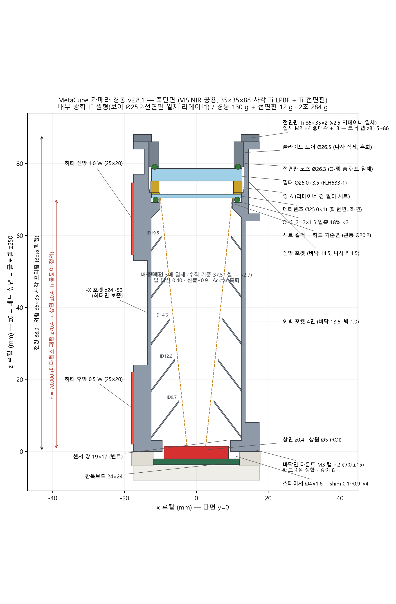
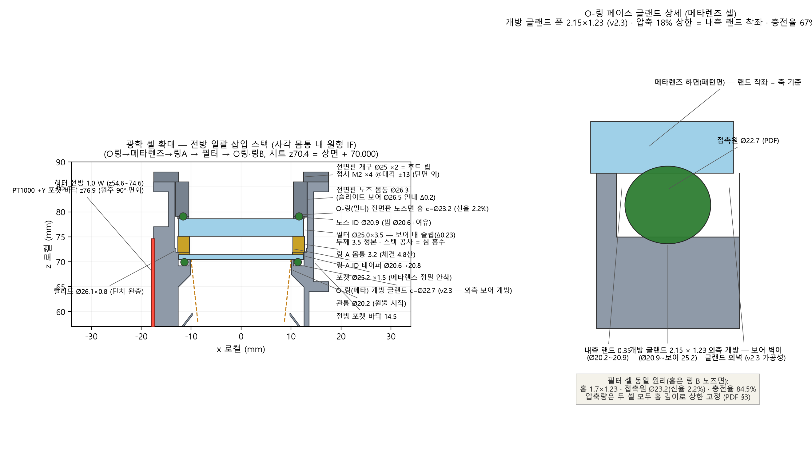
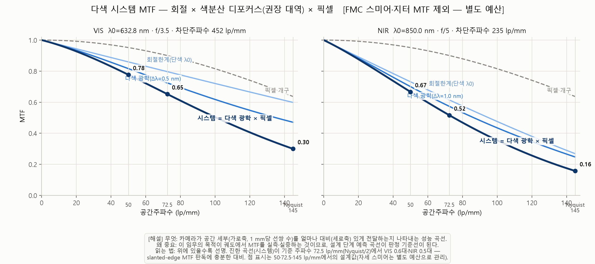
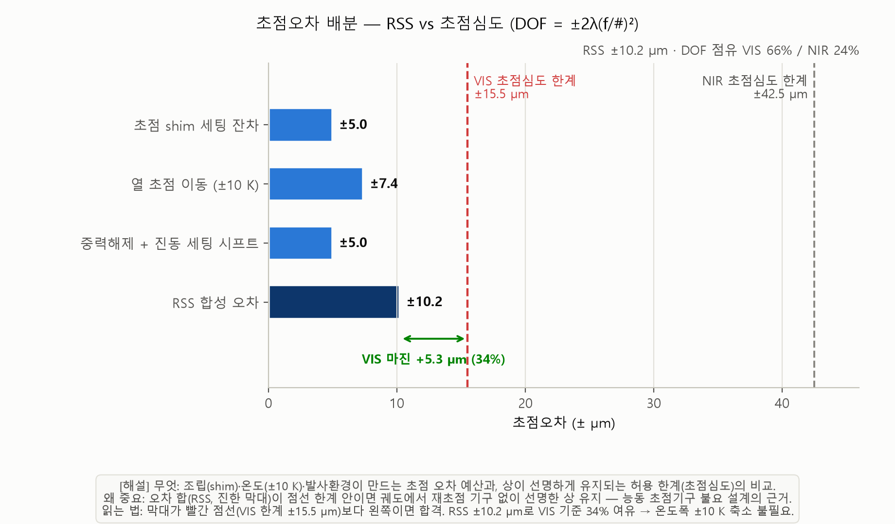
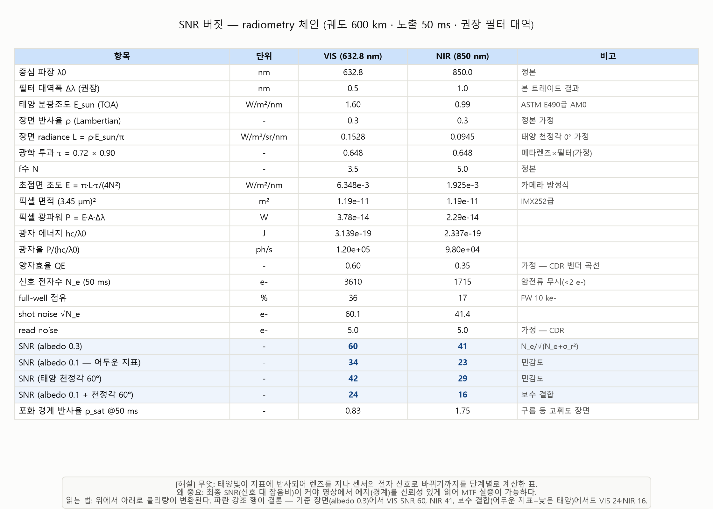
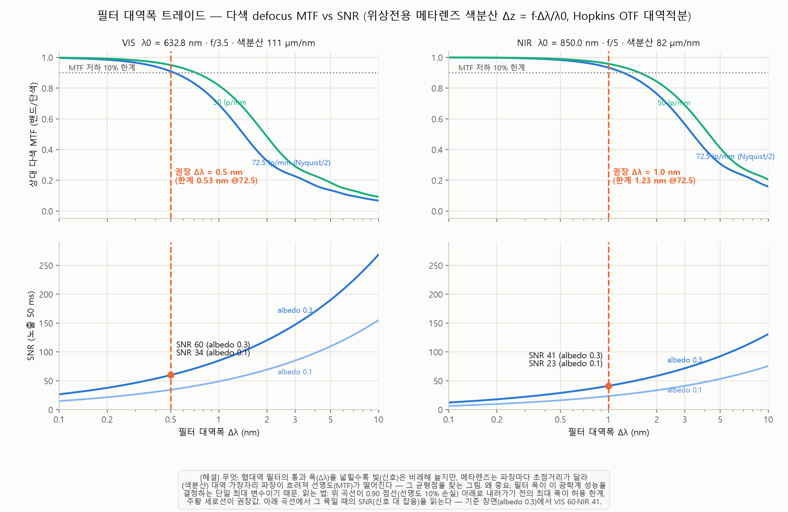

경통(카메라) 해석 결과 — CAD v2.8.1
자체 해석 결과입니다. 상용 FEM(Abaqus·COMSOL) 재검증은 별도 계획(재계산계획 v6)에 따라 CDR 전 완료 목표이며, 결과 수신 시 이 페이지의 그림·수치를 교체합니다.
검증 요약
| 검증 항목 | 결과 | 판정 |
|---|
| 부품 간 간섭 | 볼트 실물 포함 전쌍 불리언 검사 — 0건 | OK |
| 미광 (자오면 320점) | 조명∧상면가시 동시 벽점 0건 — 베인 5매(37.5°)+흑화 | OK |
| 유리 응력·예압 | 접촉압 6.2 MPa · SRS 2,000 g 극보수 가정에도 여유 ≥9배 | OK |
| 열제어 (cold) | 싱크 −50 ℃ 최악에서 히터 듀티 53 % · 도달 89분 | OK |
| 열제어 (hot) | 히터 OFF 자연 평형이 상한 대비 여유 ~9 K — 냉각장치 불요 | OK |
| 열제어 (과도) | 일식 사이클 정착 제어 오차 0.0 K — ±10 K 밴드 내 | OK |
| 초점 유지 | ±10 K → 초점 이동 ±7.4 µm ≤ 초점심도 ±15.5 µm | OK |
| 최소 벽두께 | 보어벽 1.0 · 코너 릴리프 1.0 · 탭-포켓 0.7 · 랜드 0.35 — 전 항목 충족 | OK |
| 질량·봉투 | 142.1 g/개 (경통 130.1 + 전면판 12.0) · 2조 284.2 g · 35×35×88 수납 | OK |
해석 결과 상세
히터 과도 해석 — 듀티·도달 시간

싱크 −15/−25/−50 ℃ 3케이스. 최악(−50 ℃)에서 듀티 53 %·도달 89분 — 파워 여유 확보. 정착 제어 오차 0.0 K (PT1000 폐루프, 히터와 원주 90° 분리).
축단면 전체 — 경통 v2.8.1

전장 88 mm 스택 전체. 전방 일괄 삽입(O-링→메타렌즈→링 A→필터→Ti 전면판), 배플 베인 5매 일체(수직 37.5°), 히터 2면·PT1000 위치. 경통 130.1 g + 전면판 12.0 g.
광학 셀 확대 — O-링 글랜드 상세

개방 글랜드(외벽→보어 개방, 내측 랜드 0.35 단독 착좌) · 압축 18 % 상한 = 랜드 착좌로 고정 → 볼트 토크와 무관하게 유리 접촉압 6.2 MPa 유지.
다색 시스템 MTF

축상 0.65(VIS 632.8 nm) / 0.52(NIR 850 nm) @72.5 cyc/mm. 협대역 필터(VIS 0.5 / NIR 1.0 nm)로 색분산 억제 — MTF 저하 ≤10 % 기준.
초점 예산 — 열 포함 RSS

Ti 경통 0.74 µm/K × 관리 ±10 K = ±7.4 µm ≤ 초점심도 ±15.5 µm. 조립·shim 공차 포함 RSS 마진 +34 %.
SNR 예산

노출 50 ms(FMC 적용) 기준 SNR 60(VIS) / 41(NIR). 지표 반사율 0.30 · 태양천정각 ≤45° · 판독잡음 5 e⁻ 가정.
협대역 필터 대역 트레이드

대역폭 vs MTF 저하. 권장 VIS 0.5 nm / NIR 1.0 nm. CWL 센터링 사양 신규 도출: AOI 2° = 0.10 nm (발주 사양 반영).MetaCube · 내부 검토용(noindex) · 그림 클릭 시 원본 크기